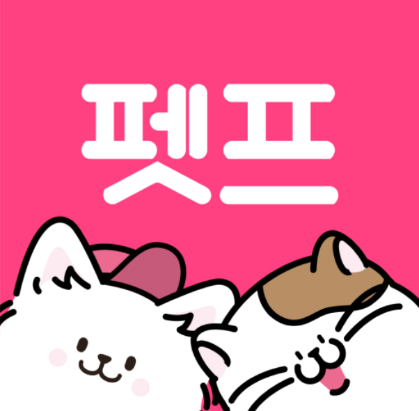

반려동물용품 쇼핑 tip
1.사료나 간식은 해외보다 국내에서 구매하는 것이 좋습니다.
2.동물의 건강을 책임질 예방야과 영양제는 해외 직구 추천합니다.
3.의류나 부피가 크지 않은 용품(장난감, 쿠션, 이동 가방 등)은 국내 구매, 해외 직구 모두 괜찮습니다.
4.부피가 큰 용품은 국내 구매를 추천합니다.

1.사료나 간식은 해외보다 국내에서 구매하는 것이 좋습니다.
2.동물의 건강을 책임질 예방야과 영양제는 해외 직구 추천합니다.
3.의류나 부피가 크지 않은 용품(장난감, 쿠션, 이동 가방 등)은 국내 구매, 해외 직구 모두 괜찮습니다.
4.부피가 큰 용품은 국내 구매를 추천합니다.
1.밥그릇 물그릇
플라스틱과 도자기 그릇의 경우, 세척과 살균에 용이하지만 박테리아 같은 잔여물이
남을 수 있어서 자주 교체해줘야 합니다.
세라믹과 유리그릇은 무거워 깨지기가 쉽고 납이 함유하고 있어 추천하지 않습니다.
철제 그릇은 가장 비싸지만, 잘 깨지지 않고 위생적이기 때문에 가장 추천하는 그릇입니다.
2.음식과 간식
반려동물의 종과 나이에 맞는 사료와 간식을 준비하는 것이 좋습니다.
요즘은 종과 나이, 무게에 맞는 세분화된 사료 종류들이 많습니다. 이에 맞는 사료를 추천합니다.
3.애견 방석
반려동물에게도 자신만의 공간을 만들어주는 것이 좋습니다.
애견 방석은 푹신한 재질도 좋지만 진드기 침입도 막아주고 생활 방수도 가능한 메모리 폼을 추천합니다.
4.리드 줄과 하네스
강아지의 경우에 산책은 필수입니다. 산책할 때 타인을 위해 리드 줄과 하네스르 꼭 착용 후 산책해야 합니다.
하네스는 목줄형보다는 가슴형 추천합니다. 목줄형의 경우 목에 무리가 가기 때문에, 가슴형을 더 추천합니다.
5.배변봉투
강아지 산책 시 배변봉투는 필수입니다. 꼭 잊지 않고 구매하셔야 합니다.
6.배변 패드, 배변 판
집의 위생을 위해서는 배변 패드와 배변 판은 필수입니다.
1.펫프렌즈
(위 클릭시 윈도우 열림)

2.핏펫
(위 클릭시 윈도우 열림)
3.펫팟
(위 클릭시 윈도우 열림)